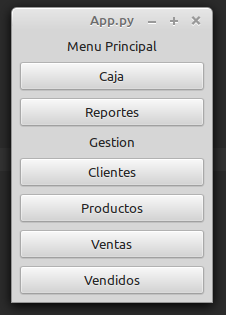
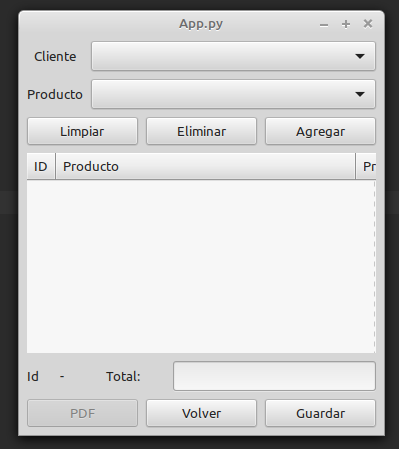
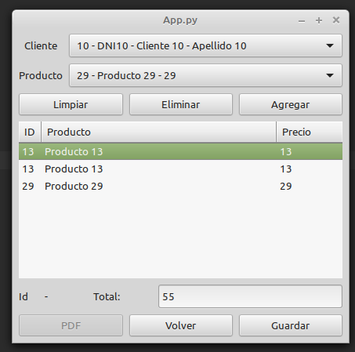
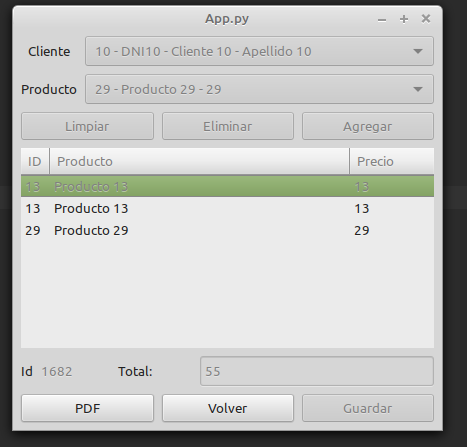
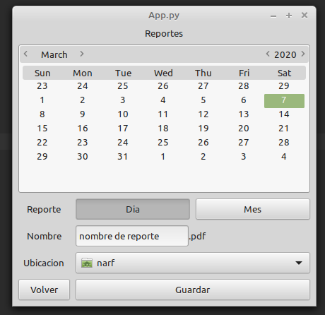
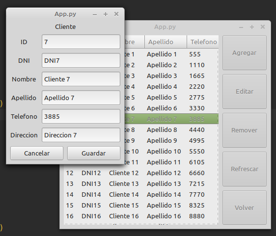
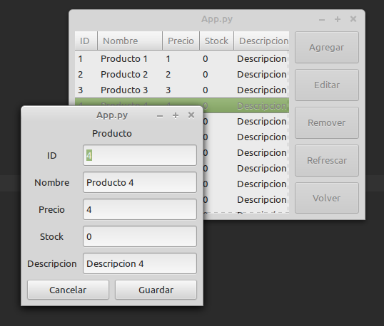
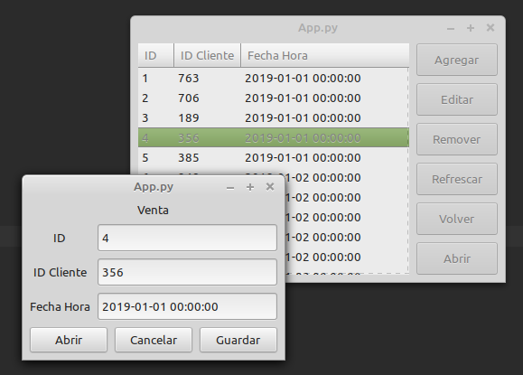
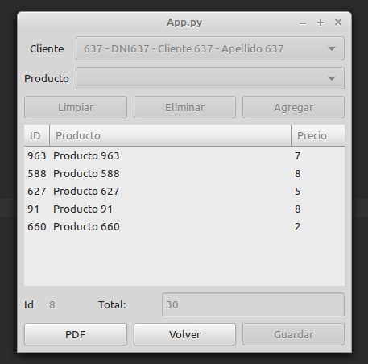
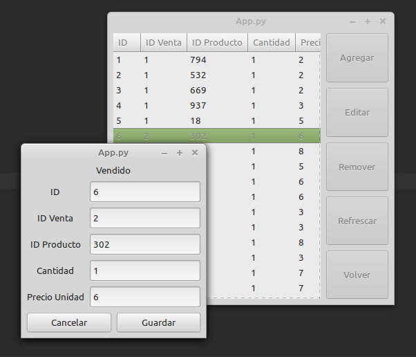

Menu Principal¶
Esta es la ventana principal de la aplicacion, se divide en controles de caja (ventas y reportes), y gestion (administracion, y creacion de elementos productos, clientes o ventas)
Gestion¶
- Clientes
Gestor de clientes: podemos agregar editar o eliminar clientes.
- Productos
Gestor de productos: podemos agregar editar o eliminar productos.
- Ventas
Gestor de ventas: podemos agregar editar o eliminar ventas. Tambien podemos regerenar las facturas de ventas cerradas.
- Vendidos
Gestor de productos vendidos: podemos agregar editar o eliminar productos vendidos.
Caja¶
Nueva Venta¶
Para realizar una nueva venta, hay que abrir la caja ( Boton caja del menu principal )
En la ventana obtenida seleccionaremos desde el menu desplegable, un cliente a quien estara asociada la venta, luego eligiremos tantos productos como sean necesarios y los agregaremos al carrito de compra presionando el boton agregar, si nos equivocamos podemos eliminar un solo elemento del carrito seleccionandolo y pulsando el boton eliminar, o limpiar el carrito de la compra con el boton Limpiar.
Cuando la venta este terminada pulsaremos en guardar, esto guardara la informacion de la venta y no podremos modificarla sin consultar con el encargado de gestion
Tambien podemos generar un PDF de la factura de esta venta presionando el boton PDF
Reportes¶
En el menu principal conseguimos el boton Reportes que nos dara acceso a un rango de opciones para generar reportes:
Podemos generar 2 tipos de reportes:
- Diarios:
Generara un reporte con todas las ventas de un dia seleccionado en el calendario y su totalizacion. Lo activaremos en el boton «Dia»
- Mensuales:
Generara un reporte con todas las ventas de un mes entero y su totalizacion, Para el reporte mensual podemos escoger cualquier dia del mes deseado, pero recuerda activar el boton «Mes»
Nota: al activar un tipo de reporte se desactiva el otro tipo de reporte.
- Luego de elegir la fecha y el tipo de reporte deseado, escribimos un nombre y elegimos una ubicacion donde guardar el reporte en PDF (recurda que debes tener permisos de la ubicacion elegida)
- Por ultimo presionamos guardar y un mensaje nos confirmara la creacion de nuestro reporte
Gestion¶
Productos¶
En esta ventana podemos ver la lista de productos existentes, agregar un nuevo cliente, elegir uno para editar o eliminar, modificando sus atributos en la ventana emergente.
Clientes¶
En esta ventana podemos ver la lista de clientes existentes, agregar un nuevo cliente, elegir uno para editar o eliminar, modificando sus atributos en la ventana emergente.
Ventas¶
En esta ventana podemos ver la lista de ventas existentes, agregar una nueva venta, elegir uno para editar o eliminar, modificando sus atributos en la ventana emergente.
Tambien podemos presionar el boton abrir para ver la factura de la venta seleccionada con opcion de reimprimir el pdf generado.
Vendidos¶
En esta ventana podemos ver la lista de productos vendidos existentes, agregar un producto vendido, elegir uno para editar o eliminar, modificando sus atributos en la ventana emergente.
